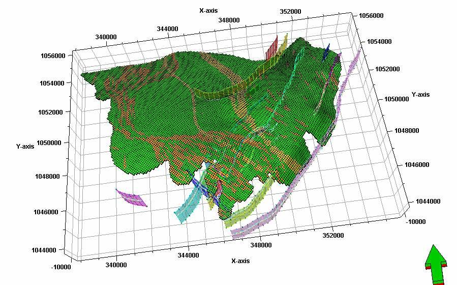

PDVSA, mayo de 2017
Modelo geoestadístico 3D del yacimiento COEFG RG 14, campo Santa Rosa
Modelo geocelular del yacimiento más importante del campo Santa Rosa (Formación Oficina, Miembro Colorado, Área Mayor de Anaco), construido como insumo para la simulación dinámica del yacimiento.
- Modelo estructural con 29 planos de falla, editados en GOCAD y Petrel, y mallado de 50 × 50 m con capas de 5 pies.
- Control de calidad de datos: de 373 pozos del área se usaron 247, tras descartar los no correlacionables, sin datos o fuera de la unidad.
- Facies de canales y barras de un sistema deltaico con Object Modeling, con dimensiones tomadas de relaciones espesor-ancho publicadas.
- Porosidad, Vshale y NetGross con simulación gaussiana secuencial y variogramas por geocuerpo, verificados contra los datos de pozo.
- Permeabilidad, saturación de agua irreducible y tipos de roca a partir de las ecuaciones del modelo petrofísico.
- Cotejo del volumen de roca del modelo con el del libro oficial de reservas.
- Petrel 2013
- GOCAD
- OpenWorks
- Object Modeling
- SGS
- Variogramas

- Pozos usados
- 247 de 373
- Planos de falla
- 29
- Niveles modelados
- 7, de COE1 a COG
- Tamaño de la malla
- Unos 13 millones de celdas